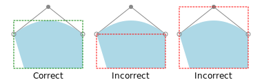
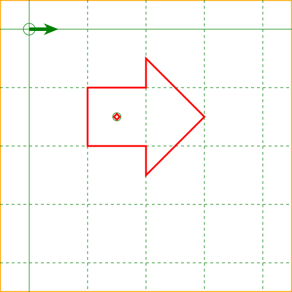
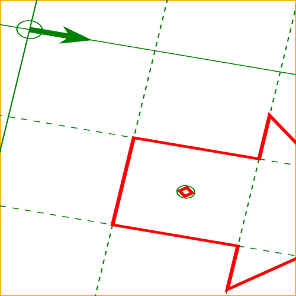
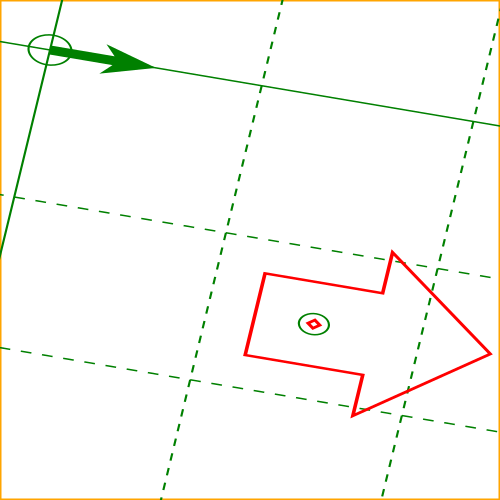
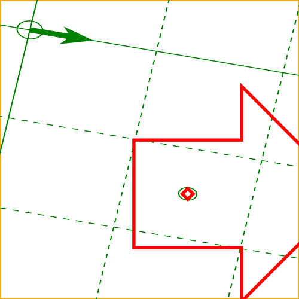
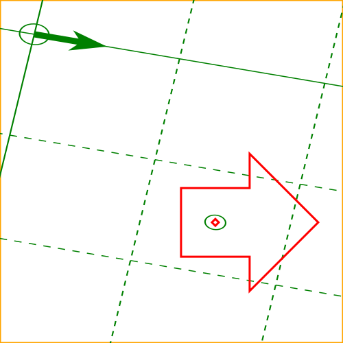
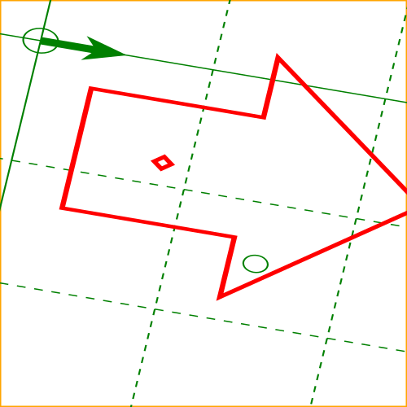
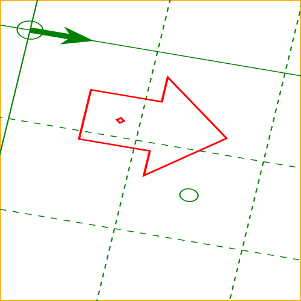
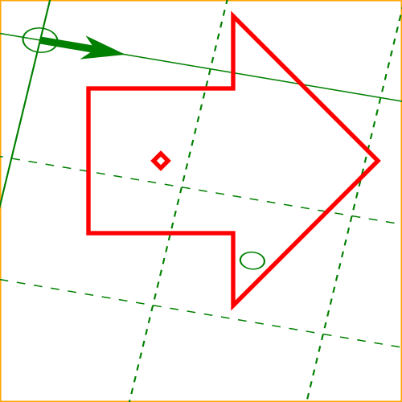

All SVG content is drawn inside
SVG viewports.
Every SVG viewport defines a drawing region characterized by a size
(width, height), and an origin, measured in abstract
user units.
Note that the term SVG viewport is distinct from the
"viewport"
term used in CSS.
The initial viewport is a top-level
SVG viewport that establishes a mapping between the coordinate system used
by the containing environment (for example, CSS pixels in web browsers)
and user units. Establishing an initial viewport is described in more
detail in The initial viewport.
SVG viewports are only established by elements. See
Establishing a new SVG viewport for information
on which elements generate viewports.
Each SVG viewport generates a
viewport coordinate system
and a user coordinate system, initially identical.
Providing a 'viewBox' on a viewport's element transforms the user coordinate system
relative to the viewport coordinate system as described in
The 'viewBox' attribute. Child elements of a viewport can
further modify the user coordinate system, for example by specifying
the 'transform' property.
SVG viewports can be nested. Percentage units are resolved with reference
to the user coordinate system of the nearest ancestral viewport-defining element,
as defined in the section on Units.
Hence, nesting
SVG viewports provides an opportunity to redefine the meaning of percentage
units and provide a new reference rectangle for "fitting" a graphic relative
to a particular rectangular area. The
furthest ancestral SVG viewport is the top most root SVG viewport with
out leaving the SVG context. An ancestor SVG viewport might not be
independent of the DOM tree order. E.g for 'linearGradient',
'radialGradient', 'pattern', 'mask element', 'clipPath''symbol' or 'use' elements.
An SVG
context is a document fragment where all elements within the fragment
have the SVGElement as prototype.
The width, height and origin of SVG viewports is established by a negotiation
process between the SVG document fragment generating the SVG viewport, and the
parent of that fragment (whether real or implicit). See
Establishing a new SVG viewport for a
description of this negotiation process.
By default, a nested SVG viewport's viewport coordinate system is equivalent to the local
coordinate system of the parent element, translated by the origin of the SVG viewport's
element. However, a 'transform' property on an SVG viewport's element will modify
the viewport coordinate system relative to the parent element's user coordinate system.
Abstractly, all SVG viewports are embedded in the
canvas,
a drawing region that is infinitely large in all relevant dimensions.
Computing the equivalent transform of an SVG viewport
This process converts the min-x, min-y, width and height values of a viewBox attribute,
the position and size of the element on which the viewBox attribute is defined,
and the value of the preserveAspectRatio attribute on that element into a translation and
a scale that is applied to content contained by the element.
Let vb-x, vb-y, vb-width, vb-height be
the min-x, min-y, width and height values of the viewBox attribute respectively.
Let e-x, e-y, e-width, e-height be
the position and size of the element respectively.
Let align be the align value of preserveAspectRatio, or 'xMidYMid' if
preserveAspectRatio is not defined.
Let meetOrSlice be the meetOrSlice value of preserveAspectRatio, or 'meet'
if preserveAspectRatio is not defined or if meetOrSlice is missing from this value.
Initialize scale-x to e-width/vb-width.
Initialize scale-y to e-height/vb-height.
If align is not 'none' and meetOrSlice is 'meet', set
the larger of scale-x and scale-y to the smaller.
Otherwise, if align is not 'none' and meetOrSlice is 'slice',
set the smaller of scale-x and scale-y to the larger.
Initialize translate-x to e-x - (vb-x * scale-x).
Initialize translate-y to e-y - (vb-y * scale-y)
If align contains 'xMid', add
(e-width - vb-width * scale-x) / 2 to translate-x.
If align contains 'xMax', add
(e-width - vb-width * scale-x) to translate-x.
If align contains 'yMid', add
(e-height - vb-height * scale-y) / 2 to translate-y.
If align contains 'yMax', add
(e-height - vb-height * scale-y) to translate-y.
The transform applied to content contained by the element is given by
translate(translate-x, translate-y) scale(scale-x, scale-y).
The initial viewport
The initial viewport's width, must be the value of the 'width'
presentation attribute on the outermost svg element, unless the
following conditions are met:
the SVG content is a separately stored resource that is
embedded by reference (such as the 'object' element in HTML), or the SVG
content is embedded inline within a containing document;
and the referencing element or containing document is
styled using CSS [CSS2];
and there are CSS-compatible positioning properties
([CSS2], section 9.3)
specified on the referencing element (e.g.,
the 'object' element) or on
the containing document's outermost svg element that are sufficient
to establish the width of the viewport.
Under these conditions, the viewport's width must be established via the
positioning properties.
Similarly, if there are
positioning properties
specified on the referencing element or on the
outermost svg element that are
sufficient to establish the height of the viewport, then these
positioning properties must establish the viewport's height;
otherwise, the initial viewport's height must be the value of the 'height'
presentation attribute on the outermost svg element.
If the 'width' or 'height'
presentation attributes on the outermost svg element
are in user units (i.e., no unit
identifier has been provided), then the value is assumed to be
equivalent to the same number of "px" units (see Units).
In the following example, an SVG graphic is embedded inline
within a parent XML document which is formatted using CSS
layout rules. Since CSS positioning properties are not provided
on the outermost svg element,
the width="100px" and
height="200px" attributes
determine the size of the initial viewport:
<?xml version="1.0" standalone="yes"?>
<parent xmlns="http://some.url">
<!-- SVG graphic -->
<svg xmlns='http://www.w3.org/2000/svg'
width="100px" height="200px">
<path d="M100,100 Q200,400,300,100"/>
<!-- rest of SVG graphic would go here -->
</svg>
</parent>
The initial coordinate system
For the outermost svg element, the SVG user
agent must determine an initial viewport coordinate system and an
initial user coordinate system such that the
two coordinates systems are identical. The origin of both
coordinate systems must be at the origin of the SVG viewport, and one
unit in the initial coordinate system must equal one
CSS 2.1 px
([CSS2], section 4.3.2)
in the SVG viewport.
In stand-alone SVG documents and in SVG document fragments embedded
(by reference or inline) within parent documents where the parent's
layout is determined by CSS [CSS2],
the initial viewport
coordinate system (and therefore the initial user coordinate
system) must have its origin at the top/left of the viewport, with
the positive x-axis pointing towards the right, the positive
y-axis pointing down, and text rendered with an "upright"
orientation, which means glyphs are oriented such that Roman
characters and full-size ideographic characters for Asian
scripts have the top edge of the corresponding glyphs oriented
upwards and the right edge of the corresponding glyphs oriented
to the right.
If the SVG implementation is part of a user agent which
supports styling documents using CSS 2.1 compatible
px units, then the SVG user agent should set its
initial value for the size of a px unit in real world
units to match the value used for other styling operations;
otherwise, if the user agent can determine the size of a
px unit from its environment, it should use that
value; otherwise, it should choose an appropriate size for one
px unit. In all cases, the size of a px must
be in conformance with the rules described in CSS 2.1
([CSS2], section 4.3.2).
Example InitialCoords below
shows that the initial coordinate system has the origin at the
top/left with the x-axis pointing to the right and the y-axis
pointing down. The initial user coordinate system has one user
unit equal to the parent (implicit or explicit) user agent's
"pixel".
The 'transform' property
User agents must support the 'transform' property and presentation attribute
as defined in [css-transforms-1].
Transform on the 'svg' element is a bit special due to the 'viewBox' attribute. The transform should be applied as if the 'svg' had a parent element with that transform set.
The 'viewBox' attribute, in conjunction with the
'preserveAspectRatio' attribute, provides the capability to
stretch an SVG viewport to fit a particular container element.
The value of the 'viewBox' attribute is a list of four
numbers <min-x>, <min-y>, <width> and <height>, separated by
whitespace and/or a comma, that specify a rectangle in user
space that should be mapped to the bounds of the SVG viewport
established by the given element, taking into account the
'preserveAspectRatio' attribute.
The presence of the 'viewBox' attribute results in a transformation
being applied to the viewport coordinate system as described in
Computing the equivalent transform of an SVG viewport.
A negative value for <width> or
<height> is an error and invalidates
the 'viewBox' attribute. A value of zero disables rendering of the
element.
Example ViewBox illustrates
the use of the 'viewBox' attribute
on the outermost svg element to specify that
the SVG content should stretch to fit bounds of the
SVG viewport.
<?xml version="1.0" standalone="no"?>
<svg width="300px" height="200px"
viewBox="0 0 1500 1000" preserveAspectRatio="none"
xmlns="http://www.w3.org/2000/svg">
<desc>Example ViewBox - uses the viewBox
attribute to automatically create an initial user coordinate
system which causes the graphic to scale to fit into the
SVG viewport no matter what size the SVG viewport is.</desc>
<!-- This rectangle goes from (0,0) to (1500,1000) in user coordinate system.
Because of the viewBox attribute above,
the rectangle will end up filling the entire area
reserved for the SVG content. -->
<rect x="0" y="0" width="1500" height="1000"
fill="yellow" stroke="blue" stroke-width="12" />
<!-- A large, red triangle -->
<path fill="red" d="M 750,100 L 250,900 L 1250,900 z"/>
<!-- A text string that spans most of the SVG viewport -->
<text x="100" y="600" font-size="200" font-family="Verdana" >
Stretch to fit
</text>
</svg>
Example ViewBox
Rendered into
SVG viewport with
width=300px,
height=200px
Rendered into
SVG viewport with
width=150px,
height=200px
The effect of the 'viewBox'
attribute is that the user agent automatically supplies the
appropriate transformation matrix to map the specified
rectangle in user coordinate system to the bounds of a designated region
(often, the SVG viewport). To achieve the effect of the example on
the left, with SVG viewport dimensions of 300 by 200 pixels, the
user agent needs to automatically insert a transformation which
scales both X and Y by 0.2. The effect is equivalent to having
an SVG viewport of size 300px by 200px and the following
supplemental transformation in the document, as follows:
<?xml version="1.0" standalone="no"?>
<svg width="300px" height="200px"
xmlns="http://www.w3.org/2000/svg">
<g transform="scale(0.2)">
<!-- Rest of document goes here -->
</g>
</svg>
To achieve the effect of the example on the right, with
SVG viewport dimensions of 150 by 200 pixels, the user agent needs
to automatically insert a transformation which scales X by 0.1
and Y by 0.2. The effect is equivalent to having an SVG viewport of
size 150px by 200px and the following supplemental
transformation in the document, as follows:
<?xml version="1.0" standalone="no"?>
<svg width="150px" height="200px"
xmlns="http://www.w3.org/2000/svg">
<g transform="scale(0.1 0.2)">
<!-- Rest of document goes here -->
</g>
</svg>
Note that in some cases the user agent will need to supply a
translate transformation in addition to a
scale transformation. For example, on an
outermost svg element, a
translate transformation will be needed if the
'viewBox' attributes specifies
values other than zero for <min-x> or <min-y>.
If both 'transform' (or 'pattern/patternTransform')
and 'viewBox' are applied to an element two new coordinate
systems are established. 'transform' establishes the first new
coordinate system for the element. 'viewBox'
establishes a second coordinate system for all descendants of
the element. The first coordinate system is post-multiplied by the
second coordinate system.
Unlike the
'transform' property,
the automatic transformation that is created
due to a 'viewBox' does not affect
the 'x', 'y', 'width' and 'height' attributes (or in the case of
the 'marker element' element, the
'marker/markerWidth' and 'marker/markerHeight' attributes) on the
element with the 'viewBox'
attribute. Thus, in the example above which shows an
'svg' element which has
'width' and 'height' presentation attributes
and a 'viewBox' attribute,
the 'width' and 'height'
represent values in the coordinate system that exists before the
'viewBox' transformation is applied. On
the other hand, like the 'transform' property, it does
establish a new coordinate system for all other attributes and
for descendant elements.
In some cases, typically when using the
'viewBox' attribute, it is desirable that the graphics stretch to
fit non-uniformly to take up the
entire SVG viewport. In other cases, it is desirable that uniform
scaling be used for the purposes of preserving the aspect ratio
of the graphics.
For 'image' elements,
'preserveAspectRatio' indicates how
referenced images should be fitted with respect to the
reference rectangle and whether the aspect ratio of the
referenced image should be preserved with respect to the
current user coordinate system.
The <align> parameter
indicates whether to force uniform scaling and, if so, the
alignment method to use in case the aspect ratio of the 'viewBox'
doesn't match the aspect ratio of the SVG viewport. The <align> parameter must be one
of the following strings:
none - Do not force
uniform scaling. Scale the graphic content of the given
element non-uniformly if necessary such that the element's
bounding box exactly matches the SVG viewport rectangle.
(Note: if <align> is
none, then the optional <meetOrSlice> value is
ignored.)
xMinYMin - Force uniform
scaling.
Align the <min-x> of
the element's 'viewBox' with the smallest X
value of the SVG viewport.
Align the <min-y> of
the element's 'viewBox' with the smallest Y
value of the SVG viewport.
xMidYMin - Force uniform
scaling.
Align the midpoint X value of the element's
'viewBox' with the midpoint X value of the SVG viewport.
Align the <min-y> of
the element's 'viewBox' with the smallest Y
value of the SVG viewport.
xMaxYMin - Force uniform
scaling.
Align the <min-x>+<width> of the
element's 'viewBox' with the maximum X value
of the SVG viewport.
Align the <min-y> of
the element's 'viewBox' with the smallest Y
value of the SVG viewport.
xMinYMid - Force uniform
scaling.
Align the <min-x> of
the element's 'viewBox' with the smallest X
value of the SVG viewport.
Align the midpoint Y value of the element's 'viewBox'
with the midpoint Y
value of the SVG viewport.
xMidYMid (the initial value) -
Force uniform scaling.
Align the midpoint X value of the element's 'viewBox'
with the midpoint X value of the SVG viewport.
Align the midpoint Y value of the element's 'viewBox'
with the midpoint Y value of the SVG viewport.
xMaxYMid - Force uniform
scaling.
Align the <min-x>+<width> of the
element's 'viewBox'
with the maximum X value of the SVG viewport.
Align the midpoint Y value of the element's 'viewBox'
with the midpoint Y
value of the SVG viewport.
xMinYMax - Force uniform
scaling.
Align the <min-x> of
the element's 'viewBox' with the smallest X
value of the SVG viewport.
Align the <min-y>+<height> of the
element's 'viewBox' with the maximum Y value
of the SVG viewport.
xMidYMax - Force uniform
scaling.
Align the midpoint X value of the element's 'viewBox'
with the midpoint X value of the SVG viewport.
Align the <min-y>+<height> of the
element's 'viewBox' with the maximum Y value
of the SVG viewport.
xMaxYMax - Force uniform
scaling.
Align the <min-x>+<width> of the
element's 'viewBox' with the maximum X value
of the SVG viewport.
Align the <min-y>+<height> of the
element's 'viewBox' with the maximum Y value
of the SVG viewport.
The <meetOrSlice>
parameter is optional and, if provided, is separated from the
<align> value by one or
more spaces and then must be one of the following strings:
meet (the default) - Scale
the graphic such that:
aspect ratio is preserved
the entire 'viewBox' is visible within
the SVG viewport
the 'viewBox' is scaled up as much
as possible, while still meeting the other criteria
In this case, if the aspect ratio of the graphic does not
match the SVG viewport, some of the SVG viewport will extend beyond
the bounds of the 'viewBox' (i.e., the area into
which the 'viewBox' will draw will be
smaller than the SVG viewport).
slice - Scale the graphic
such that:
aspect ratio is preserved
the entire SVG viewport is covered by the 'viewBox'
the 'viewBox' is scaled down as
much as possible, while still meeting the other
criteria
In this case, if the aspect ratio of the 'viewBox' does not match the
SVG viewport, some of the 'viewBox' will extend beyond the
bounds of the SVG viewport (i.e., the area into which the 'viewBox' will draw is larger
than the SVG viewport).
Including an 'svg' element inside SVG content
creates a new SVG viewport into which all contained
graphics are drawn; this implicitly establishes both
a new viewport coordinate system and a new user coordinate system.
Additionally, there is a new meaning for percentage units therein,
because a new SVG viewport has been established
(see Units).
The bounds of the new SVG viewport are defined by the 'x', 'y',
'width' and 'height' attributes on the element
establishing the new SVG viewport, such as an 'svg' element. Both the new
viewport coordinate system and the new user coordinate system
have their origins at ('x', 'y'), where 'x' and 'y'
represent the value of the corresponding attributes on the
element establishing the SVG viewport. The orientation of the new
viewport coordinate system and the new user coordinate system
correspond to the orientation of the current user coordinate
system for the element establishing the SVG viewport. A single unit
in the new viewport coordinate system and the new user
coordinate system are the same size as a single unit in the
current user coordinate system for the element establishing the SVG
viewport.
Here is an example:
<?xml version="1.0" standalone="no"?>
<svg width="4in" height="3in"
xmlns="http://www.w3.org/2000/svg">
<desc>This SVG drawing embeds another one,
thus establishing a new SVG viewport
</desc>
<!-- The following statement establishing a new SVG viewport
and renders SVG drawing B into that SVG viewport -->
<svg x="25%" y="25%" width="50%" height="50%">
<!-- drawing B goes here -->
</svg>
</svg>
A 'symbol' element
that is instanced by a 'use' element.
For historical reasons,
the 'pattern' and 'marker element' elements
do not create a new viewport,
despite accepting a 'viewBox' attribute.
Neither do the 'clipPath' or 'mask element' elements.
Percentage lengths within the content of these elements
are not proportional to the dimensions of the graphical effect region.
The 'foreignObject' element establishes a new
CSS containing block
for its child content.
This has some effects similar to a new viewport,
resetting the scope of layout for child content.
However, in order to render SVG elements that are descendents of 'foreignObject',
a new 'svg' element must establish an SVG document fragment and SVG viewport.
An 'image' creates a new
document viewport
for the referenced document.
If the referenced document is a SVG file, it will of course establish its own SVG viewport.
Whether a new SVG viewport also establishes a new additional
clipping path is determined by the value of the 'overflow' property on the element
that establishes the new SVG viewport.
Units
SVG follows the description and definition of common values and
units from the CSS Values and Units Module
[css-values] for attributes,
presentation attributes and CSS properties. Each attribute and property
must specify the used component value type. Subsequent or extending
specifications published by the CSS WG or SVG WG may extend basic data
types or add new data types.
For <percentage> values that are defined to be relative
to the size of SVG viewport:
For any x-coordinate value or width value expressed as a percentage of the
SVG viewport, the value to use must be the percentage, in user
units, of the width parameter of the 'viewBox' applied to that viewport.
If no 'viewBox' is specified, then the value to use must be the percentage, in
user units, of the width of the SVG viewport.
For any y-coordinate value or height value expressed as a percentage of the
SVG viewport, the value to use must be the percentage, in user
units, of the height parameter of the 'viewBox' applied to that viewport.
If no 'viewBox' is specified, then the value to use must be the percentage, in
user units, of the height of the SVG viewport.
For any other length value expressed as a
percentage of the SVG viewport, the percentage must be calculated as a
percentage of the normalized diagonal of the 'viewBox' applied to that viewport.
If no 'viewBox' is specified, then the normalized diagonal of the SVG viewport
must be used. The normalized diagonal length must be calculated with
sqrt((width)**2 + (height)**2)/sqrt(2).
Example Units below
illustrates some of the processing rules for different types of
units.
Example Units
The three rectangles on the left demonstrate the use of one
of the absolute unit identifiers, the "in" unit (inch). CSS defines 1
inch to be equal to 96 pixels. Therefore, the topmost rectangle, which is
specified in inches, is exactly the same size as the middle
rectangle, which is specified in user units such that there are
96 user units for each corresponding inch in the topmost
rectangle. The bottom rectangle of the group illustrates
what happens when values specified in inches are scaled.
The three rectangles in the middle demonstrate the use of
one of the relative unit identifiers, the "em" unit. Because
the 'font-size' property has been set
to 150 on the outermost 'g' element, each "em" unit is
equal to 150 user units. The topmost rectangle, which is
specified in "em" units, is exactly the same size as the middle
rectangle, which is specified in user units such that there are
150 user units for each corresponding "em" unit in the topmost
rectangle. The bottom rectangle of the group illustrates what
happens when values specified in "em" units are scaled.
The three rectangles on the right demonstrate the use of
percentages. Note that the width and height of the SVG viewport in
the user coordinate system for the SVG viewport element (in this
case, the outermost svg element) are 4000 and
2000, respectively, because processing the 'viewBox' attribute results in a
transformed user coordinate system. The topmost rectangle,
which is specified in percentage units, is exactly the same
size as the middle rectangle, which is specified in equivalent
user units. In particular, note that the 'stroke-width' property in the
middle rectangle is set to 1% of the
sqrt((actual-width)**2 +
(actual-height)**2) / sqrt(2), which in this
case is .01*sqrt(4000*4000+2000*2000)/sqrt(2), or 31.62. The
bottom rectangle of the group illustrates what happens when
values specified in percentage units are scaled.
Bounding boxes
bounding box
The bounding box (or "bbox") of an element is the tightest fitting rectangle
aligned with the axes of that element's user coordinate system that entirely
encloses it and its descendants.
Three kinds of bounding boxes can be computed for an element:
The object bounding box is the bounding box that contains only
an element's geometric shape. For basic shapes, this is the area
that is filled. Unless otherwise specified, this is what is meant by the
unqualified term "bounding box".
The stroke bounding box is the bounding box that contains
an element's geometric shape and its stroke shape.
The decorated bounding box is the bounding box that contains
an element's geometric shape, its stroke shape and its markers.
For curved shapes, the bounding box must enclose all portions of the shape
along the edge, not just end points. Note that control points for a curve which
are not defined as lying along the line of the resulting curve (e.g., the second
coordinate pair of a Cubic Bézier command) must not contribute to the dimensions
of the bounding box (though those points may fall within the area of the
bounding box, if they lie within the shape itself, or along or close to the
curve). For example, control points of a curve that are at a further distance
than the curve edge, from the non-enclosing side of the curve edge, must be
excluded from the bounding box.

The path 'M20,50 L35,100 H120 V50 Q70,10 20,50'
is shown in light blue. On the left, a correct object bounding box of the path is
shown. Note that it does not include the top-most control point of the curve, but
it does include all of the blue shape, even the parts that lie outside of the convex hull
of the control points.
Even if an element is not in the rendering tree – due to it being
'display: none', within a 'defs'
element, not usually rendered like a 'symbol' element or not
currently present in the document tree – it still has a bounding box.
A call to getBBox
on the element will return the same rectangle as if the element were
rendered. However, an element that is not in the rendering tree
does not contribute to the bounding box of any ancestor element.
The following example defines a number of elements. The expected
object bounding box for each element with an ID is shown below.
Element ID
Bounding Box Result
"defs-1"
{0, 0, 0, 0}
"rect-1"
{20, 20, 40, 40}
"group-1"
{30, 30, 40, 40}
"use-1"
{30, 30, 40, 40}
"group-2"
{10, 10, 100, 100}
"rect-2"
{10, 10, 100, 100}
For text content elements, for the purposes of the bounding box
calculation, each glyph must be treated as a separate graphics element.
The calculations must assume that all glyphs occupy the full glyph cell.
The full glyph cell must have width
equal to the horizontal advance and height equal to the EM box for horizontal
text. For vertical text that is typeset sideways, the full glyph cell must
have width equal to the EM box and height equal to the horizontal advance.
For other vertical text, the full glyph cell must have width equal to the
EM box and height equal to the vertical advance, or height equal to the height
of the EM box if no vertical advance is defined in the font.
For example, for horizontal text, the calculations must assume that each glyph
extends vertically to the full ascent and descent values for the font.
Because declarative or scripted animation can change the shape, size, and
position of an element, the bounding box is mutable. Thus, the bounding box
for an element shall reflect the current values for the element at the snapshot
in time at which the bounding box is requested, whether through a script call
or as part of a declarative or linking syntax.
An element which has zero width, zero height, or both (such as a
vertical or horizontal line, or a 'rect' element with a zero
'width' or 'height') still has a bounding box, with a
positive value for the positive dimension, or with '0'
for both the width and height if no positive dimension is specified. Similarly,
subpaths segments of a 'path' element with zero width and height must be
included in that element's geometry for the sake of the bounding box.
An element with no position specified (such as a
'path' element with a value of none for the 'd' property) is positioned at the
point (0,0) for the purposes of calculating a bounding box.
Note that elements whose DOM object does not derive from SVGGraphicsElement
(such as gradient elements) do not have a bounding box, and thus have no
interface to request a bounding box.
Elements in the rendering tree which reference unresolved resources shall
still have a bounding box, defined by the position and dimensions specified in
their attributes, or by the initial value for those attributes if no
values are supplied. For example, the element <use href="#bad" x="10" y="10"/>
would have a bounding box with an x and y of 10 and a width and height of 0.
The following algorithm defines how to compute a bounding box for a given
element. The inputs to the algorithm are:
element, the element we are computing a bounding box for;
space, a coordinate space in which the bounding box will be computed;
fill, a boolean indicating whether the bounding box includes the geometry of the element and its descendants;
stroke, a boolean indicating whether the bounding box includes the stroke of the element and its descendants;
markers, a boolean indicating whether the bounding box includes the markers of the element and its descendants; and
clipped, a boolean indicating whether the bounding box is affected by any clipping paths applied to the element and its descendants.
The algorithm to compute the bounding box is as follows, depending on the type of element:
Let box be a rectangle initialized to (0, 0, 0, 0).
Let fill-shape be the equivalent path of element
if it is a shape, or a shape that includes each of the glyph cells corresponding
to the text within the elements otherwise.
If fill is true, then set box to the tightest rectangle
in the coordinate system space that contains fill-shape.
If stroke is true and the element's 'stroke' is anything other than
none, then set box to be the union of box and the
tightest rectangle in coordinate system space that contains the stroke shape of the
element, with the assumption that the element has no dash pattern.
Otherwise, set box to be the union of box and the result of invoking the
algorithm to compute a bounding box with child as the element,
space as the target coordinate space, true for fill,
stroke and markers, and clipped for clipped.
If clipped is true and the value of 'clip-path' on element is not
none, then set box to be the tightest rectangle
in coordinate system space that contains the intersection of box and the clipping path.
Otherwise, set box to be the union of box and the result of invoking the
algorithm to compute a bounding box with child as the element
and the same values for space, fill, stroke,
markers and clipped as the corresponding algorithm input values.
If clipped is true:
If the value of 'clip-path' on element is not
none,
then set box to be the tightest rectangle
in coordinate system space that contains the intersection of box and the clipping path.
If the 'overflow' property applies to the element
and does not have a value of visible,
then set box to be the tightest rectangle
in coordinate system space that contains the intersection of box and the element's overflow bounds.
If the 'clip' property applies to the element
and does not have a value of auto,
then set box to be the tightest rectangle
in coordinate system space that contains the intersection of box and the rectangle specified by 'clip'.
Let box be the tightest rectangle in coordinate space space that
contains the positioning rectangle defined by the
'x',
'y',
'width' and
'height' geometric properties of the element.
The fill, stroke and markers
input arguments to this algorithm do not affect the bounding box returned
for these elements.
If clipped is true and the value of 'clip-path' on element is not
none, then set box to be the tightest rectangle
in coordinate system space that contains the intersection of box and the clipping path.
Return box.
The union box with a value of (0, 0, 0, 0) and an empty shape
is box.
The following elements offer the option of expressing
coordinate values and lengths as fractions (and, in some cases,
percentages) of the object bounding box,
by setting a specified attribute to 'objectBoundingBox'
on the given element:
Indicates that the attributes which specify the
gradient vector ('x1', 'y1', 'x2', 'y2') represent fractions or
percentages of the bounding box of the element to which the
gradient is applied.
Indicates that the attributes which specify the center
('cx', 'cy'), the radius ('r') and focus
('fx', 'fy') represent fractions or
percentages of the bounding box of the element to which the
gradient is applied.
Indicates that the attributes which define how to tile the pattern
('x', 'y', 'width', 'height') are
established using the bounding box of the element to which the pattern
is applied.
Indicates that the user coordinate system for the
contents of the pattern is established using the bounding
box of the element to which the pattern is applied.
Indicates that the user coordinate system for the contents of the
'clipPath' element is established using the bounding box of the
element to which the clipping path is applied.
Indicates that the attributes which define the masking region
('x', 'y', 'width', 'height') is
established using the bounding box of the element to which the mask
is applied.
Indicates that the user coordinate system for the contents of
the 'mask element' element are established using the bounding box of
the element to which the mask is applied.
Indicates that the attributes which define the
filter effects region
('x', 'y', 'width', 'height') represent
fractions or percentages of the bounding box of the element to which
the filter is applied.
Indicates that the various length values within the filter
primitives represent fractions or percentages of the bounding box of
the element to which the filter is applied.
In the discussion that follows, the term applicable element
is the element to which the given effect applies. For gradients and
patterns, the applicable element is the graphics element
which has its 'fill' or 'stroke' property referencing the
given gradient or pattern. (For special rules concerning text elements, see the discussion of object
bounding box units and text elements.) For clipping paths,
masks and filters, the applicable element can be either a
container element or a graphics element.
When keyword objectBoundingBox is used, then the
effect is as if a supplemental transformation matrix were
inserted into the list of nested transformation matrices to
create a new user coordinate system.
First, the (minx,miny) and
(maxx,maxy) coordinates are
determined by the extends of the object bounding box of
the applicable element.
Then, coordinate (0,0) in the new user coordinate system is
mapped to the (minx,miny) corner of the tight bounding box
within the user coordinate system of the applicable element and
coordinate (1,1) in the new user coordinate system is mapped to
the (maxx,maxy) corner of the tight bounding box of the
applicable element. In most situations, the following
transformation matrix produces the correct effect:
[ (maxx-minx) 0 0 (maxy-miny) minx miny ]
When percentages are used with attributes that define the
gradient vector, the pattern tile, the filter region or the
masking region, a percentage represents the same value as the
corresponding decimal value (e.g., 50% means the same as 0.5).
If percentages are used within the content of a 'pattern',
'clipPath', 'mask element' or 'filter element' element, these values
are treated according to the processing rules for percentages
as defined in Units.
Any numeric value can be specified for values expressed as a
fraction or percentage of object bounding box units. In
particular, fractions less are zero or greater than one and
percentages less than 0% or greater than 100% can be
specified.
Keyword objectBoundingBox
should not be used when the geometry of the applicable element
has no width or no height, such as the case of a horizontal or
vertical line, even when the line has actual thickness when
viewed due to having a non-zero stroke width since stroke width
is ignored for bounding box calculations. When the geometry of
the applicable element has no width or height and objectBoundingBox is specified, then
the given effect (e.g., a gradient or a filter) will be
ignored.
With bitmap image formats, the intrinsic dimensions are fixed in
the image file, and the specified size is defined in the host document as needed
to scale the image.
SVG, being inherently scalable, adapts the intrinsic width and
intrinsic height to be the width and height of the specified size.
Therefore, when specified as a length, the 'width' and
'height' sizing properties of the 'svg' element control the
intrinsic dimensions of the SVG image and the specified size that
is used when placing the SVG image in a host document.
The intrinsic aspect ratio must be calculated using the following
algorithm. If the algorithm returns null, then there is no intrinsic aspect ratio.
If the 'width' and 'height' sizing properties on the
'svg' element are both absolute values:
let viewbox be the viewbox defined by the active SVG View
return viewbox.width / viewbox.height
If the 'viewBox' on the 'svg' element is correctly specified:
let viewbox be the viewbox defined by the 'viewBox'
attribute on the 'svg' element
return viewbox.width / viewbox.height
return null
The behaviour defined in this section is specific to CSS, but may be adapted
to other host contexts. In all host contexts, the intrinsic aspect ratio,
where available, must be respected when sizing the SVG viewport.
Examples:
Example: Intrinsic Aspect Ratio 1
...
]]>
In this example the intrinsic aspect ratio of the SVG viewport is 2:1. The
intrinsic width is 10cm and the intrinsic height is 5cm.
Example: Intrinsic Aspect Ratio 2
...
]]>
In this example the intrinsic aspect ratio of the outermost SVG viewport is
1:1. An aspect ratio calculation in this case allows embedding in an
object within a containing block that is only constrained in one direction.
Example: Intrinsic Aspect Ratio 3
...
]]>
In this case the intrinsic aspect ratio is 1:1.
Example: Intrinsic Aspect Ratio 4
...
]]>
In this example, the intrinsic aspect ratio is 1:1.
Add more examples for the new auto value? E.g some of the
examples
provided by David Vest.
Sometimes it is of interest to let the outline of an object keep its
original width or to let the position of an object fix no matter which
transforms are applied to it. For example, in a map with a 2px wide line
representing roads it is of interest to keep the roads 2px wide even when the
user zooms into the map, or introductory notes on the graphic chart in which
panning is possible.
To offer such effects regarding special coordinate transformations and
graphic drawings, SVG Tiny 1.2 introduced the 'vector-effect' property.
Although SVG Tiny 1.2 introduced only non-scaling stroke behavior, this version
introduces a number of additional effects. Furthermore, since these effects
can be specified in combination, they show more various effects. And, future
versions of the SVG language will allow for more powerful vector effects
through this property.
Values of 'vector-effect' other than
non-scaling-stroke and none
are at risk of being dropped from SVG 2 due to a lack of implementations.
Feedback from implementers is requested,
regarding the practicality of implementing them as currently specified,
during the implementation period.
Specifies that no vector effect shall be applied, i.e. the default rendering behaviour
from SVG 1.1 is used which is to first fill the geometry of a shape with a specified
paint, then stroke the outline with a specified paint.
Specifies special user coordinate system toward this element
and its descendant by constrained transformations with the following
characteristics. The scale of the user coordinate system do not
change in spite of change of CTMs from a host coordinate space.
However, it does not specify the suppression of rotation and skew. Also,
it does not specify the fixation of placement of user coordinate system.
Since non-scaling-size suppresses scaling of user coordinate system,
it also has the characteristic of non-scaling-stroke. The transformation
formula and the example behavior are indicated to the following chapter.
non-rotation
Specifies special user coordinate system toward this element
and its descendant by constrained transformations with the following
characteristics. The rotation and skew of the user coordinate system
is suppressd in spite of change of CTMs from a host coordinate space.
However, it does not specify the suppression of scaling. Also, it does not
specify the fixation of placement of user coordinate system.
The transformation formula and the example behavior are indicated to the
following chapter.
fixed-position
Specifies special user coordinate system toward this element
and its descendant by constrained transformations with the following
characteristics. The placement of user coordinate system is fixed
in spite of change of CTMs from a host coordinate space. However,
it does not specify the suppression of rotation, skew and scaling. When
the element that has fixed-position effect and also has 'transform'
property, that property is consumed for this effect. The shift components
e and f of matrix of 'transform' property are
used to transfer the origin of fixed user coordinate system. The
transformation formula and the example behavior are indicated to the
following chapter.
These values can be enumerated. Thereby, the effect which has these
characteristics simultaneously can be specified.
Note: Future versions of SVG may allow ways to specify the device coordinate system.
Computing the vector effects
This section shows the list of transformation formulas regarding
combinations of the values for clarification of the behavior of vector effects
excluding non-scaling-stroke which has clear
implications.
When the 'vector-effect' is added to an element like the above, the
transformation formula for user coordinate to the device coordinate changes as
follows. Here, xf and yf are user
coordinate of the corresponding element and its descendant. And,
xo and yo are matrix element
e and f of the transform attribute which the
corresponding element has. In addition, |det(CTM)| is absolute value of
the determinants of CTM. When this value becomes 0 and
non-scaling-size is appointed,
'vector-effect' becomes invalidity namely none.
veValue
Formula
non-scaling-size
non-rotation
non-scaling-sizenon-rotation
fixed-position
fixed-positionnon-scaling-size
fixed-positionnon-rotation
fixed-positionnon-scaling-sizenon-rotation
Computing the vector effects for nested viewport coordinate systems
Below is normal coordinate transformation formula for nested viewport
coordinate systems without vector effects. xviewport(UA) and
yviewport(UA) are coordinates which under the immediate
control of user agent. CTMthis is CTM for the
transformation matrix from user coordinate system of an target graphic
to viewport coordinate system to which it belongs.
CTMparent is CTM for the transformation matrix from
aforementioned viewport coordinate system to viewport coordinate system
of the parent of that. And, CTMroot is CTM for
rootmost viewport coordinate system (UA).
When applying seven formulas of the preceding section to nested viewport
coordinate systems, the application way of those formulas changes as follows
by whether viewport or
screen is specified as the additional value of
'vector-effect'.
When viewport value is specified,
user agent computes coordinates combining either of seven formulas of
the preceding chapter, and the following formulas.
When screen value is specified,
user agent computes coordinates combining either of seven formulas of
the preceding chapter, and the following formulas.
Examples of vector effects
Below is an example of the non-scaling-stroke'vector-effect'.
Below is an example of the none'vector-effect' (no vector effect).
Before changing CTM
After changing CTM


Source code
]]>
Below is an example of the non-scaling-size.
Before changing CTM
After changing CTM

]]>
Below is an example of the non-rotation.
Before changing CTM
After changing CTM

]]>
Below is an example of the non-scaling-sizenon-rotation.
Before changing CTM
After changing CTM

]]>
Below is an example of the fixed-position.
Before changing CTM
After changing CTM

]]>
Below is an example of the non-scaling-sizefixed-position.
Before changing CTM
After changing CTM

]]>
Below is an example of the non-rotationfixed-position.
Before changing CTM
After changing CTM

]]>
Below is an example of the non-scaling-sizenon-rotationfixed-position.
An SVGTransform object can be designated as read only,
which means that attempts to modify the object will result in an exception
being thrown, as described below.
An SVGTransform object can be associated
with a particular element. The associated element is used to
determine which element's 'transform'
presentation attribute to update if the object reflects
that attribute. Unless otherwise described, an SVGTransform object is
not associated with any element.
Every SVGTransform object operates in one of
two modes. It can:
reflect an element of a presentation attribute value
(being exposed through the methods on the
baseVal member of
an SVGAnimatedTransformList),
An SVGTransform object maintains an internal
<transform-function>
value, which is called its value.
It also maintains a DOMMatrix object,
which is called its matrix object,
which is the object returned from the matrix
IDL attribute. An SVGTransform object's
matrix object
is always kept synchronized with its value.
The numeric transform type constants defined on SVGTransform are used
to represent the type of an SVGTransform's value.
Their meanings are as follows:
Constant
Meaning
SVG_TRANSFORM_MATRIX
A matrix(…) value.
SVG_TRANSFORM_TRANSLATE
A translate(…) value.
SVG_TRANSFORM_SCALE
A scale(…) value.
SVG_TRANSFORM_ROTATE
A rotate(…) value.
SVG_TRANSFORM_SKEWX
A skewX(…) value.
SVG_TRANSFORM_SKEWY
A skewY(…) value.
SVG_TRANSFORM_UNKNOWN
Some other type of value.
The use of numeric transform type constants is an anti-pattern and
new constant values will not be introduced for any transform types supported by
SVGTransform. If other types of transforms are supported and used, the SVGTransform
uses the SVG_TRANSFORM_UNKNOWN
type. See below for details on how the other properties of an SVGTransform
operate with these types of transforms.
The type IDL attribute represents
the type of transform item that the SVGTransform's value is.
On getting type, the following steps
are run:
If the SVGTransform's value
is a
matrix(…),
translate(…),
scale(…),
rotate(…),
skewX(…) or
skewY(…) function,
then return the corresponding constant
value from the transform type table above.
See the
CSS Transforms
specification for a description of how the different transform function types
correspond to particular matrix values.
The angle IDL attribute
represents the angle parameter of a
rotate(…),
skewX(…) or
skewY(…) transform function.
On getting, the following steps are run:
If the SVGTransform object's value
is a rotate(…),
skewX(…) or
skewY(…) function,
return its angle argument in degrees.
Otherwise, return 0.
The setMatrix method is used
to set the SVGTransform to a given matrix value. When
setMatrix(matrix) is called, the following steps are run:
Let newMatrix be the result of DOMMatrixReadOnly.fromMatrix(matrix),
including the validate and fix-up steps for missing values.
If that method throws an error, then re-throw that error and abort these steps.
If newMatrix.is2D() would return true,
then set the SVGTransform object's
value to a matrix(…)
value that represents the same matrix as newMatrix.
Otherwise, set the SVGTransform object's
value to a matrix3d(…)
value that represents the same matrix as newMatrix.
The
setTranslate,
setScale,
setRotate,
setSkewX and
setSkewY methods are used
to set the SVGTransform to a new transform function
value. When one of these methods is called,
the following steps are run:
This specification imposes additional requirements on the behavior of DOMMatrix
objects beyond those described in the
Geometry Interfaces
specification, so that they can be used to reflect presentation attributes
that take transform values.
Every DOMMatrix object operates in one of two modes.
It can:
be detached, which is the case for DOMMatrix objects
created using their constructor or with
createSVGMatrix.
A DOMMatrix can be designated as read only,
which means that attempts to modify the object will result in an exception
being thrown. When assigning to any of a read only DOMMatrix's
IDL attributes, or when invoking any of its mutable transform methods,
a NoModificationAllowedError exception will be thrown
instead of updating the internal value.
Note that this applies only to the read-write DOMMatrix
interface; the DOMMatrixReadOnly interface, which is not used for reflecting
'transform', will already throw an exception if an attempt is made to modify it.
When assigning to any of a writable DOMMatrix's
IDL attributes, or when invoking any of its mutable transform methods,
the following steps are run after updating the internal matrix value:
If the DOMMatrix would return true from its
is2d
method, then set the SVGTransform object's
value to a matrix(…)
value that represents the same matrix as the DOMMatrix.
Otherwise, set the SVGTransform object's
value to a matrix3d(…)
value that represents the same matrix as the DOMMatrix.
The createSVGTransformFromMatrix
method is used to create a new SVGTransform object from a matrix object.
When the createSVGTransformFromMatrix(matrix) method is called,
the following steps are run:
Follow the steps that would be run if the setMatrix
method on transform were called, passing matrix
as its argument.
Return transform.
The consolidate
method is used to convert the transform list into an equivalent
transformation using a single transform function. When the
consolidate() method is called, the following steps are run:
Let transform be a newly created SVGTransform
object.
Let matrix be the matrix value obtained by beginning
with an identity matrix, and then post-multiplying the
value of the matrix object for each
SVGTransform in the list, in order.
Set the components of transform's
matrix object to the component values in
matrix.
If transform's
matrix object would return true from its
is2d
method, then set transform's
value to a matrix(…)
value that represents the same matrix as the matrix object.
Otherwise, set transform's
value to a matrix3d(…)
value that represents the same matrix as the matrix object.
The baseVal and
animVal IDL attributes
represent the value of the reflected presentation attribute.
On getting baseVal or
animVal, an
SVGTransformList object is returned that reflects the given
presentation attribute.
An SVGPreserveAspectRatio object can be designated as read only,
which means that attempts to modify the object will result in an exception
being thrown, as described below.
The numeric alignment type constants defined on SVGPreserveAspectRatio
are used to represent the alignment keyword values that 'preserveAspectRatio'
can take. Their meanings are as follows:
Constant
Meaning
SVG_PRESERVEASPECTRATIO_NONE
The none keyword.
SVG_PRESERVEASPECTRATIO_XMINYMIN
The xMinYMin keyword.
SVG_PRESERVEASPECTRATIO_XMIDYMIN
The xMidYMin keyword.
SVG_PRESERVEASPECTRATIO_XMAXYMIN
The xMaxYMin keyword.
SVG_PRESERVEASPECTRATIO_XMINYMID
The xMinYMid keyword.
SVG_PRESERVEASPECTRATIO_XMIDYMID
The xMidYMid keyword.
SVG_PRESERVEASPECTRATIO_XMAXYMID
The xMaxYMid keyword.
SVG_PRESERVEASPECTRATIO_XMINYMAX
The xMinYMax keyword.
SVG_PRESERVEASPECTRATIO_XMIDYMAX
The xMidYMax keyword.
SVG_PRESERVEASPECTRATIO_XMAXYMAX
The xMaxYMax keyword.
SVG_PRESERVEASPECTRATIO_UNKNOWN
Some other type of value.
Similarly, the numeric meet-or-slice type constants defined on
SVGPreserveAspectRatio are used to represent the meet-or-slice
keyword values that 'preserveAspectRatio' can take. Their
meanings are as follows:
Constant
Meaning
SVG_MEETORSLICE_MEET
The meet keyword.
SVG_MEETORSLICE_SLICE
The slice keyword.
SVG_MEETORSLICE_UNKNOWN
Some other type of value.
The align IDL attribute
represents the alignment keyword part of the 'preserveAspectRatio'
value. On getting, the following steps are run:
If the meet-or-slice value is not present in value,
then return SVG_MEETORSLICE_MEET.
Otherwise, the meet-or-slice value is present. Return the constant
value as specified in the meet-or-slice constant table above for the meet-or-slice
keyword in value.
On setting meetOrSlice, the
following steps are run:


{kind=link}